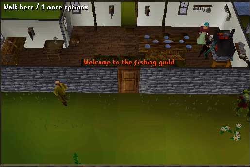

Fishing Guild
Welcome to the Fishing Guild.To enter you need to have at least 68 Fishing.
If you do not have a Fishing level of 68, you may enter the guild at level 65 with a dose of a Fishing potion or Fish pie, or level 63 with an Admiral Pie. You do not need anything to leave and can just walk out the door.
The location is north from East Ardougne and to the southwest of Seer's Village. Once you are in the guild, it is a great location to catch fish.
At the entrance there is a range on the right and a lobster pot, harpoon and a big net spawn to the left. The ladder doesn't do anything anymore, at least not for now. In RuneScape Classic it was mainly used for people who used Fishing pots to enter as the only way for them to get out was to use the ladder.

Once you have gone through the second door, to the west is the Fishing Shop. To the north is the first platform for you to start fishing off of.
Platform 1: South Dock

Fishing Shop

A little more to the north is the second fishing platform and to the west of it is the bank.
The Fishing Guild Bank:

Platform 2: North Dock

That's all for the Fishing Guild. I hope you enjoy it.
This Guild guide was written by trekkie. Thanks to Ariendiablo and DRAVAN for corrections.
This Guild guide was entered into the database on Fri, Apr 16, 2004, at 06:54:13 PM by stormer and was last updated on Sat, Mar 04, 2006, at 08:45:45 AM by Oblivion590.